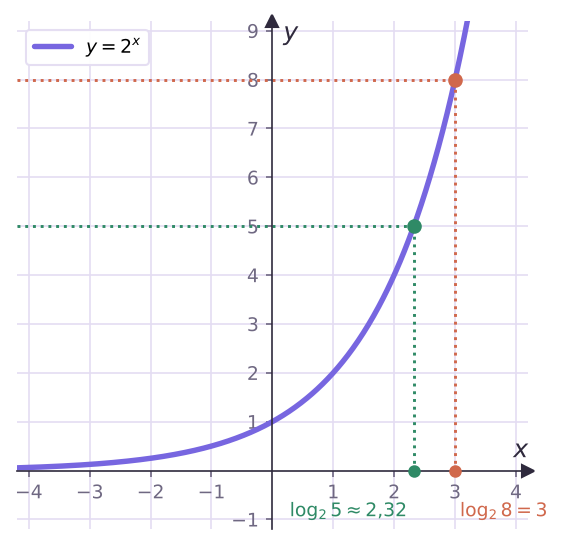

Теория
Уравнение 2x = 8 решается в уме: x = 3. А как решить 2x = 5? Подбором не выйдет: 2² = 4 < 5 < 8 = 2³, значит, корень лежит между 2 и 3. Корень точно есть и он один — из урока 11 мы знаем, что показательная функция принимает каждое положительное значение ровно один раз. Но записать его обычной дробью нельзя. Чтобы у такого числа было имя, придумали новое обозначение — логарифм: x = log2 5.

Логарифмом положительного числа b по основанию a, где a > 0 и a ≠ 1, называется показатель степени, в которую нужно возвести a, чтобы получить b. Обозначение: loga b.
Коротко: loga b = c ⇔ ac = b.
Читаем: «логарифм b по основанию a». Вычислить логарифм — значит ответить на один вопрос: «в какую степень нужно возвести основание, чтобы получилось число?»
Вычисли: а) log2 8; б) log3 (1/9); в) log5 1; г) log7 7.
а) 2³ = 8, значит, log2 8 = 3.
б) 1/9 = 1/3² = 3−2, значит, log3 (1/9) = −2.
в) 50 = 1, значит, log5 1 = 0. г) 71 = 7, значит, log7 7 = 1.
Из пунктов в) и г): при любом допустимом основании loga 1 = 0 и loga a = 1. Эти два равенства стоит помнить наизусть.
Вычисли: а) log4 2; б) log27 9.
а) 41/2 = √4 = 2, значит, log4 2 = 1/2.
б) Сразу не видно. Обозначим log27 9 = c, тогда 27c = 9. Приводим к одному основанию, как в уроке 12: 33c = 3², 3c = 2, c = 2/3.
Вычисли log1/2 4.
(1/2)c = 4, то есть 2−c = 2², −c = 2. Ответ: −2.
Логарифм — это показатель степени, а не частное и не произведение: log2 8 = 3, а не 8 : 2 = 4. И не путай знак: log3 (1/9) = −2, потому что 3−2 = 1/9; ответ «1/2» или «−9» — ошибка.
Когда логарифм существует
Число под логарифмом должно быть положительным. Степень ac при a > 0 всегда положительна, поэтому в степень, равную −4 или 0, основание не возвести. log2 (−4) и log2 0 не существуют.
Основание положительно и не равно 1. 1 в любой степени равно 1: log1 5 не существует, а «log1 1» было бы равно любому числу. Отрицательные основания не рассматривают — так же, как в показательной функции.
| Запись | Есть ли значение | Почему |
|---|---|---|
| log2 (−4) | нет | 2c > 0 при любом c |
| log3 0 | нет | 3c ≠ 0 |
| log1 5 | нет | 1c = 1 ≠ 5 |
| log1/3 9 | да, −2 | (1/3)−2 = 9 |
| log5 (1/5) | да, −1 | 5−1 = 1/5 |
Основное логарифмическое тождество
Если a > 0, a ≠ 1, b > 0, то aloga b = b.
Почему. loga b — это ровно тот показатель, в который надо возвести a, чтобы получить b. Возводим a в этот показатель — получаем b. Верно и «обратное»: loga ac = c при любом c.
Вычисли: а) 3log3 7; б) 23 + log2 5; в) 52log5 3.
а) По тождеству: 7.
б) Сумма в показателе — это произведение степеней: 23 + log2 5 = 2³·2log2 5 = 8·5 = 40.
в) Степень степени: 52log5 3 = (5log5 3)² = 3² = 9.
Ошибка: «23 + log2 5 = 3 + 5 = 8». Тождество работает, только когда в показателе стоит один логарифм с тем же основанием. Сначала разложи степень: am + n = am·an, amn = (an)m.
Простейшие логарифмические уравнения
Уравнение loga x = b по определению означает x = ab. Так же, если под логарифмом выражение: loga f(x) = b ⇔ f(x) = ab. Число ab положительно, поэтому условие «под логарифмом положительное число» выполнится само.
Реши уравнения: а) log3 x = 4; б) log1/2 x = 3; в) log2 (x − 1) = 3.
а) x = 3⁴ = 81. б) x = (1/2)³ = 1/8.
в) x − 1 = 2³ = 8, x = 9. Проверка: log2 (9 − 1) = log2 8 = 3 ✓.
Реши уравнение logx 16 = 2.
По определению x² = 16, x = 4 или x = −4. Но основание логарифма должно быть положительным и не равным 1, поэтому x = −4 не подходит.
Ответ: x = 4.
Когда неизвестное стоит в основании, обязательно проверь условия x > 0 и x ≠ 1. Ответ «x = ±4» в примере 6 — типичная потеря балла.
Логарифм — ответ показательного уравнения
Теперь решается любое уравнение ax = b с b > 0: по определению x = loga b. Такой ответ считается точным — так же, как √2 в квадратном уравнении.
Реши уравнения: а) 5x = 7; б) 2x + 1 = 5.
а) x = log5 7.
б) x + 1 = log2 5, x = log2 5 − 1. Число log2 5 лежит между 2 и 3, значит, корень — между 1 и 2.
Задачи урока
Реши в тетради. Ответы разберём на занятии.
Тест к уроку
Домашнее задание
Задачи Д1–Д6 ниже. У каждого логарифма записать «вопрос»: в какую степень возводим основание, чтобы получить число. Выучить определение логарифма, основное логарифмическое тождество и равенства loga 1 = 0, loga a = 1.